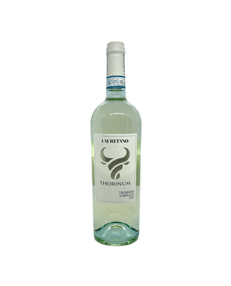

Vino 'Aglianico del Vulture' Rosso Riserva
Tipologia:
vino 'Rosso'
Denominazione:
DOC vino 'Aglianico del Vulture'
Descrizione:
Vitigno 'Aglianico': 100%
Valore minimo:
20%
Materia prima:
Vitigno 'Aglianico'
Province e città di produzione:
Provincia di Potenza :
Barile Rionero in Vulture

Vino 'Terre dell'Alta Val d'Agri' Bianco
Tipologia:
vino 'Bianco'
Denominazione:
DOC vino 'Terre dell'Alta Val d'Agri'
Descrizione:
Vitigno 'Malvasia': 100%
Materia prima:
Vitigno 'Malvasia'
Province e città di produzione:
Provincia di Potenza :
Viggiano

Vino 'Grottino di Roccanova' Rosso
Tipologia:
vino 'Rosso'
Denominazione:
DOC vino 'Grottino di Roccanova'
Descrizione:
Vitigno 'Sangiovese': 60%, 'Montepulciano': 20%, 'Malvasia Nera': 20%
Valore massimo:
80%
Materia prima:
Vitigno 'Sangiovese', Vitigno 'Montepulciano', Vitigno 'Malvasia Nera'
Province e città di produzione:
Provincia di Potenza :
Roccanova

Vino 'Matera Greco'
Tipologia:
vino 'Bianco'
Denominazione:
DOC vino 'Matera'
Descrizione:
Vitigno 'Greco Bianco': 100%
Valore minimo:
20%
Materia prima:
Vitigno 'Greco Bianco'
Province e città di produzione:
Provincia di Matera :
Matera

Vino 'Matera Primitivo'
Tipologia:
vino 'Rosso'
Denominazione:
DOC vino 'Matera'
Descrizione:
Vitigno 'Primitivo': 100%
Materia prima:
Vitigno 'Primitivo'
Province e città di produzione:
Provincia di Matera :
Bernalda